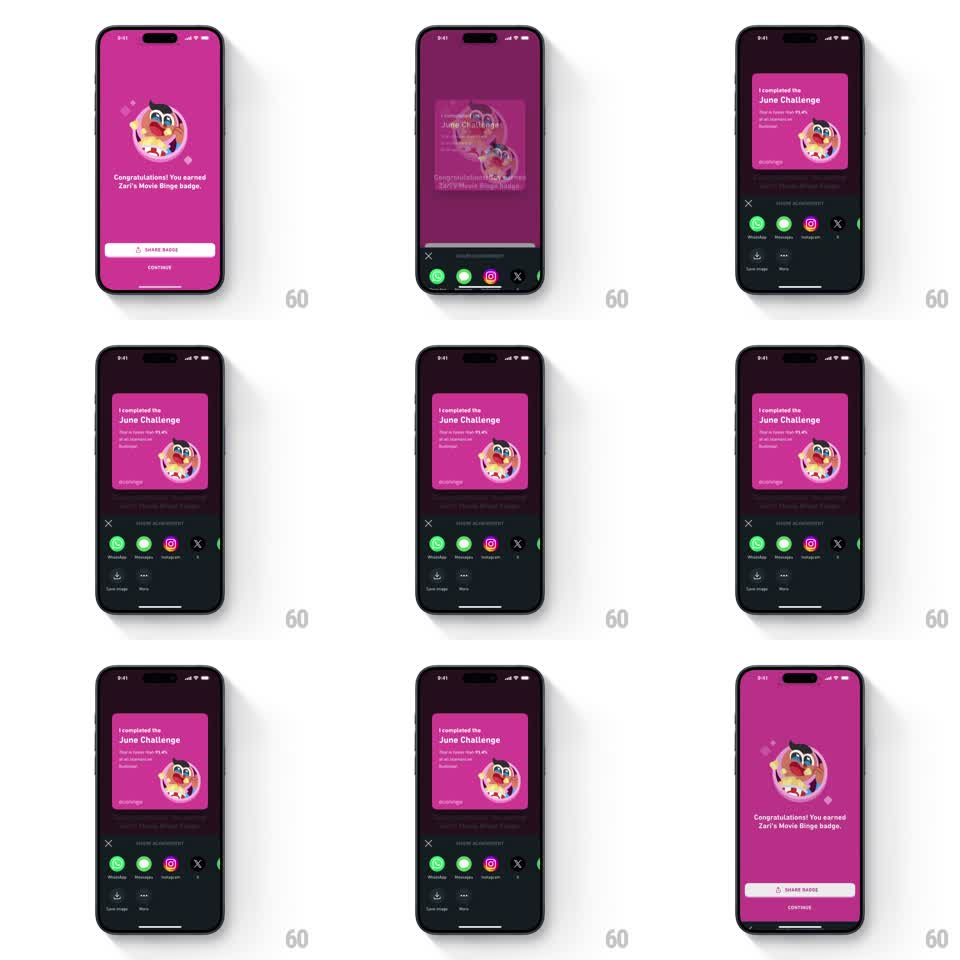

Media
Frame-by-frame

Rebuild this interaction 1:1: Duolingo's share badge sheet - from the pink badge screen ("Congratulations! You earned Zari's Movie Binge badge."), tapping SHARE BADGE slides up a bottom sheet with a springy entrance showing a share preview card ("I completed the June Challenge") and a row of share targets (WhatsApp, Messages, Instagram, X, Save image, More); dismissing slides it back down to the badge screen.

Rebuild this interaction 1:1: Duolingo's share badge sheet - from the pink badge screen ("Congratulations! You earned Zari's Movie Binge badge."), tapping SHARE BADGE slides up a bottom sheet with a springy entrance showing a share preview card ("I completed the June Challenge") and a row of share targets (WhatsApp, Messages, Instagram, X, Save image, More); dismissing slides it back down to the badge screen.
## Integration
Integration: stack-agnostic spec - springs given as stiffness/damping, timed motions as duration + curve; map every value to your framework and animation library of choice.
## Scene
Pink badge screen: a Duo owl badge with sparkles, "Congratulations! You earned Zari's Movie Binge badge.", white SHARE BADGE button, CONTINUE below. The sheet: dark background, a pink preview card with the badge and "I completed the June Challenge" text, an X close button, "SHARE ACHIEVEMENT" label, a row of round share icons (WhatsApp, Messages, Instagram, X) plus a second row (Save image, More).
## Motion spec
Pattern: spring bottom sheet with staggered share options.
- Tap SHARE BADGE: the badge screen dims (scrim to 60%, 200ms) as the sheet slides up (spring ~300/20, slight overshoot past its rest point then settle).
- The preview card scales in (0.9 -> 1, 200ms) as the sheet arrives.
- Share icons pop in left to right (scale 0.6 -> 1, spring ~340/16, 50ms stagger), then the second row.
- Drag on the sheet: it follows the finger 1:1 downward; release below 40% of its height dismisses (slide down 250ms ease-in, scrim fades), otherwise it springs back.
- The X button dismisses with the same slide-down; behind the sheet, the badge screen is unchanged.
## Calibration
- The spring overshoot is small - the sheet feels buoyant, not bouncy.
- The preview card reads as the exact image that would be shared.
## Reduced motion
The sheet fades and slides up 40pt (200ms) without spring overshoot.
## Don't miss
- The sheet is dark even though the badge screen is bright pink - clear layering.
- Share icons use their real brand colors (green WhatsApp, green Messages, gradient Instagram, black X).